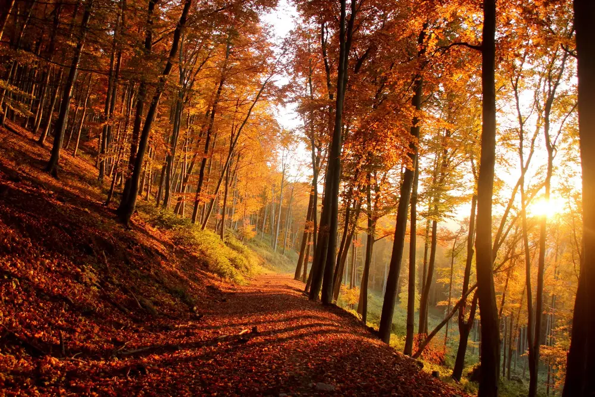
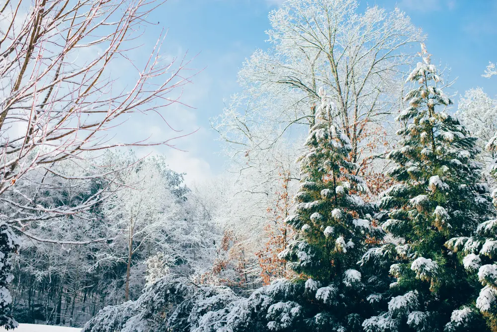

The DoTravelling journal · Scotland
When to go,
season by season
The same place can feel like four different trips. This guide goes through spring, summer, autumn and winter, so you can pick the season that suits how you like to travel: the light, the weather, the crowds and the cost.
Seasonal travel
Choose your
season.
March – May
 June – August
June – August
Spring
Longer evenings, blossom in the parks, and room to walk before the summer crowds arrive.
Read the spring guide →
June – August
Summer
Long daylight and festival energy, with the busiest streets and the highest prices of the year.
Read the summer guide →
September – NovemberAutumn
Cooler walks, changing leaves, and a quieter pace once the summer visitors have gone home.
Read the autumn guide →
December – FebruaryWinter
Short days and cold air, with festive markets, cosy interiors and far fewer crowds.
Read the winter guide →